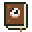
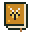

Wildhearth
A cosy countryside mod for Minecraft: seasons and soil, kitchen gardens and orchards, bees and mead, livestock breeds with real genetics, deer and woodland folk, caves full of wonders, and a Harvest Fair every autumn.
Minecraft Java 26.3 · Fabric · needs Fabric API
Start here
When you first join a world you're handed the Naturalist's Field Guide. Everything in this wiki comes from it and its sister books, word for word, with the pictures and recipes laid out so you can search them. There are 276 book pages here, 311 items and 65 creature portraits.
Naturalist's Field Guide
Every new player is handed one: deer and their genes, troughs, woodland folk, farming, the kitchen garden, rivers, livestock, and the fairs and festivals.

Cattle Breeds
Nine breeds of cattle, dairy, beef and dual-purpose, and how to breed for the traits you want.
Pig Breeds
Nine breeds of pig, from prolific Yorkshires to heritage Tamworths.
Poultry Breeds
Fifteen breeds of chicken, the eggs they lay, and four kinds of quail.

The Beekeeper's Handbook
Bees and their kinds, skeps and frame hives, honeys from every flower, mead, and the herb garden.
The Seed Saver's Handbook
Crop genetics: pollination, saving seed, and breeding better varieties.
The Caver's Handbook
What waits underground: wonders, folk, finds, the root cellar and the kit to carry.
More
Creatures
Deer, reindeer, badgers, elves, a hedgehog pedlar, a badger judge, and every livestock breed.
Items
Every item and block, with where to read about it.
Recipes
Crafting and cooking, all in one place.
Gallery
Pictures from the game.
Some things are meant to be found by playing. They're hidden behind Secret boxes: open them only if you want to know.